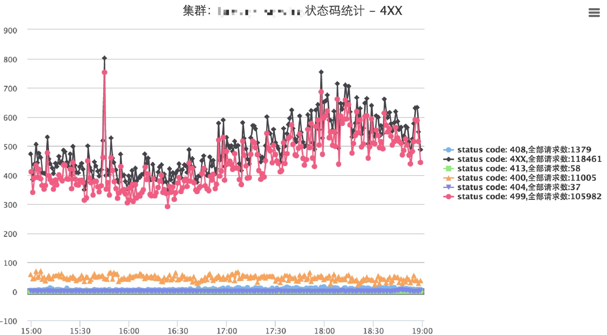
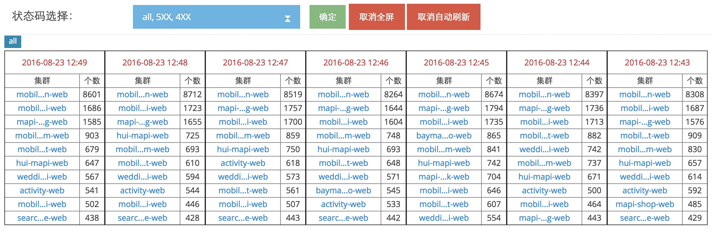
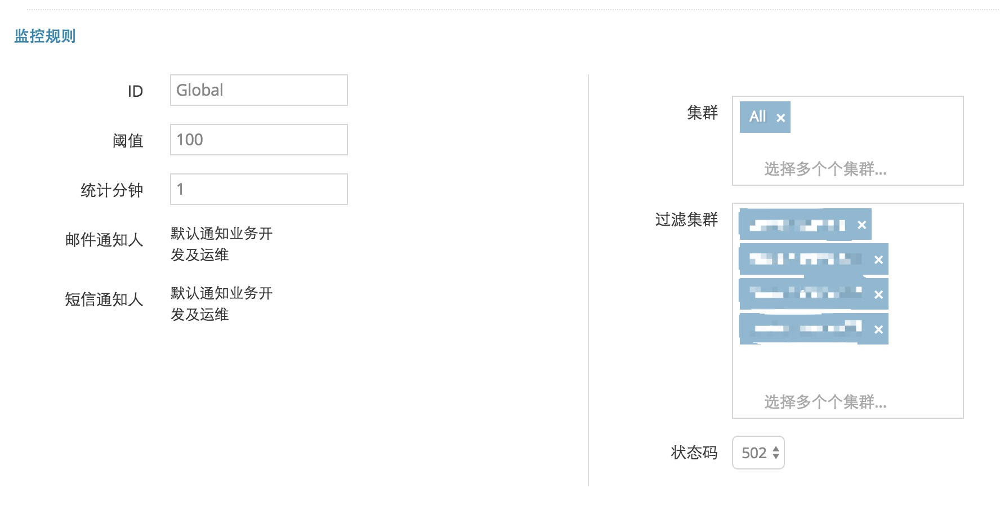
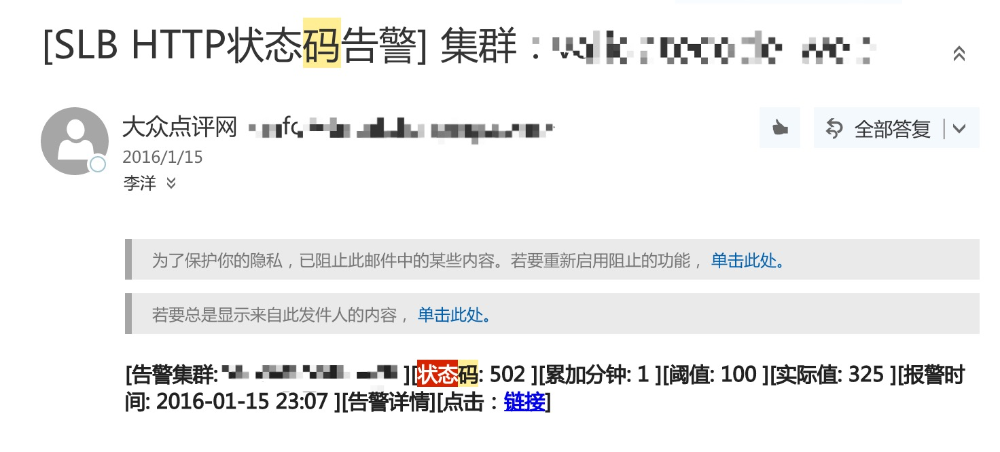

5.2 状态码监控
对于动态请求，Nginx本身不处理请求，而是反向代理到业务服务器，由业务服务器来真正处理请求。
业务服务器的处理状态，可以通过http返回状态码来判定。Nginx本身的access.log中，记录了每条请求以及返回状态码。对返回状态码进行监控，可以了解业务服务器的状态。
目前Camel以业务集群upstream为粒度进行监控，提供了状态码趋势图、状态码大盘、监控规则报警功能。
状态码趋势图

如图所示，Camel提供了错误状态码趋势图。该趋势图以upstream集群为粒度，展现了每分钟状态码的变化状况。
状态码大盘

大盘是从另外一个角度查看状态码监控信息：找出每分钟错误状态码最多的几个upstream，并按照错误状态码个数进行排序。
大盘提供了定时刷新的功能。可以配置在屏幕上，由值班运维人工监控。
监控规则及告警
Camel支持对错误状态码的个数进行监控。当某个集群，制定时段内的某个错误状态码个数超过了阈值，则会发出告警。
监控规则如下图所示： 
告警邮件如下图所示： 
如果您需要使用状态码监控的功能，需要自己做一些开发：
1. 开发Nginx日志处理功能。在大众点评内部，Camel部署了一个Strom Topology，订阅并处理Nginx服务器上的Nginx日志。不同公司对日志处理方式不同，建议您结合自己公司日志处理中间件，处理Nginx日志，最后调用Camel的接口"api/nginx/log/addLog"，Camel会自行对日志进行统计
2. 开发发送告警邮件功能。请修改com.dianping.phoenix.lb.monitor.nginx.log.sender中的类。